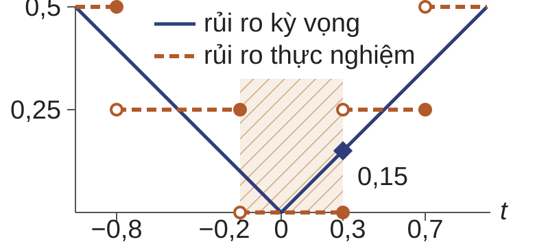

Học máy, rủi ro thống kê và khả năng tổng quát hóa
Mất mát từ hợp lý, rủi ro kỳ vọng, hội tụ đều và số chiều Vapnik–Chervonenkis (VC) · Bài 12
Khớp hoàn hảo tập huấn luyện cho rủi ro nhỏ trên dữ liệu mới, với xác suất cao, khi lớp giả thuyết chọn trước có số hàm hoặc số chiều VC nhỏ so với cỡ mẫu và dữ liệu mới cùng phân phối với tập huấn luyện.
Cơ sở toán học cho AI · Học kỳ 1, 2026–2027
Trường Đại học Công nghệ · Đại học Quốc gia Hà Nội
Tiên quyết và quy ước
Nhắc lại:
cực đại hợp lý tương đương cực tiểu rủi ro thực nghiệm $-\frac1n\sum_i\log p_\theta(x_i)$ (Mệnh đề 11.3);
$A\in\mathbb R^{n\times p}$: phương trình chuẩn $A^\top Aw=A^\top y$ luôn có nghiệm, duy nhất khi và chỉ khi $\operatorname{rank}A=p$ (Mệnh đề 05.3);
bất đẳng thức hợp (union bound) $\mathbb P(E\cup F)\le\mathbb P(E)+\mathbb P(F)$ (Hệ quả 10.7);
$Z_1,\ldots,Z_n$ độc lập, trong $[0,1]$: $\mathbb P(\lvert\bar Z_n-\mathbb E\bar Z_n\rvert\ge\varepsilon)\le2e^{-2n\varepsilon^2}$, mọi $\varepsilon>0$ (Hoeffding, Định lý 05c.47).
Ký hiệu: $\log$ tự nhiên; hàm chỉ báo (indicator function) $\mathbf 1_{\{p\}}\in\{0,1\}$, $=1$ khi $p$ đúng.
Mục tiêu học tập
Suy ra hai mất mát từ hợp lý có điều kiện; nhận ra khi hợp lý cực đại không có nghiệm hữu hạn.
Giải phương trình chuẩn; phân biệt hệ số duy nhất, giá trị khớp duy nhất.
Định nghĩa rủi ro kỳ vọng, rủi ro thực nghiệm, tối thiểu hóa rủi ro thực nghiệm; tính chính xác rủi ro của bộ phân loại ngưỡng.
Chứng minh hội tụ đều, cận rủi ro dư của nghiệm gần đúng cho lớp hữu hạn.
Phân biệt tham số độ chính xác, độ tin cậy; chứng minh số chiều VC của hai lớp ngưỡng.
Tách rủi ro dư thành ba nguồn sai số; chỉ ra giả thiết vi phạm khi phân phối đổi.
Câu hỏi: Tại sao một mô hình có thể khớp hoàn hảo dữ liệu huấn luyện nhưng dự đoán sai trên dữ liệu mới?
2.Bài toán học có giám sát
Quy tắc học chọn hàm dự đoán từ mẫu, còn chất lượng của hàm được đo trên quan sát mới.
phân phối đích · lớp giả thuyết · mất mát · quy tắc học
Ví dụ: bốn sản phẩm và ba bộ phân loại
Giá trị đo $x\in[-1,1]$ có phân phối đều; sản phẩm lỗi ($y=1$) khi và chỉ khi $x\ge0$.
$i$
$1$
$2$
$3$
$4$
$x_i$
$-0{,}8$
$-0{,}2$
$0{,}3$
$0{,}7$
$y_i$
$0$
$0$
$1$
$1$
$h_0(x)=\mathbf 1_{\{x\ge0\}}$: báo lỗi khi giá trị đo từ $0$ trở lên;
$h_{0{,}3}(x)=\mathbf 1_{\{x\ge0{,}3\}}$: báo lỗi khi giá trị đo từ $0{,}3$ trở lên;
hàm ghi nhớ $g$: đúng nhãn tại $x_1,\ldots,x_4$, bằng $0$ tại mọi điểm khác.
Câu hỏi: Ba bộ phân loại dự đoán tốt đến mức nào trên một sản phẩm mới?
Các thành phần của bài toán học
$\mathcal X$: đầu vào, $\mathcal Y$: nhãn, $\mathcal A$: giá trị dự đoán.
Phân phối đích $P$ chưa biết; tập huấn luyện $S=((x_i,y_i))_{i=1}^n$; (G1) $S\sim P^n$ độc lập cùng phân phối (independent and identically distributed, i.i.d.), quan sát mới $(X,Y)\sim P$ độc lập với $S$.
Phương sai chưa biết: tại $\hat w$, $-\log L(\hat w,\sigma^2)=\tfrac32\log(2\pi\sigma^2)\to-\infty$ khi $\sigma^2\downarrow0$; không có nghiệm hợp lý cực đại theo $(w,\sigma^2)$.
Mô hình Bernoulli có điều kiện
Hai quan sát nhãn nhị phân: $(x_1,y_1)=(-1,0)$, $(x_2,y_2)=(1,1)$; mô hình cần $\mathbb P(Y=1\mid X=x)$ thay cho mật độ Gaussian.
Trực quan. Tham số chung điều khiển xác suất lỗi theo đặc trưng; sigmoid ép điểm số vào $(0,1)$.
Định nghĩa. $\mathbb P_\theta(Y=y\mid X=x)=m_\theta(x)^y[1-m_\theta(x)]^{1-y}$, $y\in\{0,1\}$.
Mô hình logistic (logistic regression), đặc trưng $\phi(x)\in\mathbb R^p$: $m_w(x)=\operatorname{sigm}(w^\top\phi(x))$, $\operatorname{sigm}(z)=\frac1{1+e^{-z}}$.
Mỗi nhân tử dương vì $m_i\in(0,1)$ (giả thiết), nên mọi log hữu hạn và $-\frac1n\log L(\theta)$ là (5.1).
Hai tập nghiệm trùng nhau, kể cả khi cả hai rỗng.
Ví dụ: hai nhãn đối xứng
Dữ kiện: $(x_1,y_1)=(-1,0)$, $(x_2,y_2)=(1,1)$; $m_w(x)=\operatorname{sigm}(wx)$, không hệ số tự do.
$w=0$: mỗi nhãn thật nhận xác suất $\tfrac12$, $\hat L_2(0)=\log2\approx0{,}6931$.
$w=\log3$: hai nhãn thật cùng nhận $\tfrac34$, $\hat L_2(\log3)=-\log\tfrac34\approx0{,}2877$.
Với mọi $w$: $\hat L_2(w)=\log(1+e^{-w})$ (5.2) giảm chặt về $0$, không đạt $0$.
Diễn giải: dữ liệu tách được tuyến tính (linearly separable): $w=1$ cho $wx_i>0$ khi $y_i=1$, $wx_i<0$ khi $y_i=0$, nên hợp lý cực đại không có nghiệm hữu hạn.
Trong học máy, thêm $\lambda\lVert w\rVert^2$, $\lambda>0$, cho một bài toán khác, có nghiệm.
Bài tập: entropy chéo khi cực tiểu không đạt được
Câu hỏi: Hai cặp $(x_1,y_1)=(-2,0)$, $(x_2,y_2)=(1,1)$, độc lập có điều kiện; $m_w(x)=1/(1+e^{-wx})$, không có hệ số tự do (Bài tập 12.2, câu 3).
Chứng minh không có tham số hữu hạn đạt cực tiểu entropy chéo. Với $\eta\in(0,1)$, tìm một điều kiện đủ theo $w$ để mất mát không quá $\eta$.
Lời giải: theo (5.1), $\hat L_2(w)=\tfrac12\bigl[\log(1+e^{-2w})+\log(1+e^{-w})\bigr]>0$.
$\hat L_2'(w)<0$ và $\hat L_2(w)\to0$ khi $w\to+\infty$: cận dưới $0$ không đạt.
Với $w\ge0$, $\log(1+u)\le u$ cho $\hat L_2(w)\le\tfrac12(e^{-2w}+e^{-w})\le e^{-w}$, nên $w\ge\log(1/\eta)$ đủ.
4.Rủi ro kỳ vọng và tối thiểu hóa rủi ro thực nghiệm
Sai số trên quan sát mới là một kỳ vọng theo phân phối, còn mẫu chỉ cho trung bình trên dữ liệu đã thấy.
rủi ro kỳ vọng · rủi ro thực nghiệm · rủi ro Bayes · lớp ngưỡng
Rủi ro kỳ vọng và rủi ro thực nghiệm
$h_0$, $h_{0{,}3}$, $g$ đúng bốn nhãn, khác nhau trên sản phẩm mới.
Trực quan. Kỳ vọng tính trên mọi quan sát theo $P$; trung bình mẫu chỉ dùng $n$ quan sát.
Định nghĩa.Rủi ro kỳ vọng (expected risk, population risk) (6.1), $(X,Y)\sim P$; rủi ro thực nghiệm (empirical risk) (6.2):
Diễn giải: $t=-0{,}1;\ 0;\ 0{,}3$ cùng có $\hat R_S=0$ nhưng $R=0{,}05;\ 0;\ 0{,}15$; mẫu không phân biệt được chúng.
Trong học máy, quy tắc phá hòa giữa các nghiệm ERM không thêm thông tin về ngưỡng thật.

Bài tập: rủi ro chính xác của bộ phân loại ngưỡng
Câu hỏi: $X\sim\operatorname{Uniform}[-1,1]$, $Y=\mathbf 1_{\{X\ge0\}}$, $h_t(x)=\mathbf 1_{\{x\ge t\}}$ với $t\in[-1,1]$, mất mát $0$–$1$ (Bài tập 12.3).
1. Dùng (6.6), tính $R(h_{-0{,}4})$ và $R(h_{0{,}2})$.
2. Với tập huấn luyện $(-0{,}9;0)$, $(-0{,}1;0)$, $(0{,}4;1)$, $(0{,}8;1)$, tìm toàn bộ nghiệm ERM, xác định đúng hai đầu khoảng, cho hai nghiệm có rủi ro kỳ vọng khác nhau.
$\mathcal H_{\mathrm c}$: mỗi hàm hằng có $R=\hat R_S=\tfrac12$, nên $\Delta_S=0$.
$\mathcal H_\uparrow$: $\lvert R-\hat R_S\rvert$ lớn nhất bằng $0{,}15$, tại $t=0{,}3$ $(0{,}15-0)$ và $t=-0{,}2$ $(\lvert0{,}1-0{,}25\rvert),$ nên $\Delta_S=0{,}15$.
$\mathcal H_{\mathrm{all}}$: $\tilde h$ trùng $\mathbf 1_{\{x\ge0\}}$ trừ bốn điểm mẫu, đổi nhãn tại đó: $\hat R_S(\tilde h)=1$, $R(\tilde h)=0$; mọi rủi ro thuộc $[0,1]$, nên $\Delta_S=1$.
Diễn giải: độ lệch đều tăng theo độ linh hoạt, từ $0$ lên $0{,}15$ rồi $1;$ trên $\mathcal H_{\mathrm{all}}$, $\hat R_S$ không cho thông tin về $R$.
Hội tụ đều cho lớp hữu hạn
Giả thiết: (G1) $S\sim P^n$; (G2) $\ell(a,y)\in[0,1]$; (G3) $\mathcal H$ gồm $M\ge1$ hàm đo được, cố định trước khi lấy mẫu.
Với $\delta\in(0,1)$, $\varepsilon_n(M,\delta)=\sqrt{\log(2M/\delta)/(2n)}$ (7.5): với xác suất ít nhất $1-\delta$ theo $S$, mọi $h\in\mathcal H$ có $\lvert R(h)-\hat R_S(h)\rvert\le\varepsilon_n$ (Định lý 12.13).
Nói riêng, mọi $P$, mọi $n\ge N_{\mathcal H}(\varepsilon,\delta)=\lceil\log(2M/\delta)/(2\varepsilon^2)\rceil$, $\mathbb P_S(\Delta_S\le\varepsilon)\ge1-\delta$ (7.3): $\mathcal H$ có tính hội tụ đều (uniform convergence).
Lưu ý: mất mát bình phương và entropy chéo không bị chặn, nằm ngoài (G2).
$R_{\mathcal H}^*-R^*$: sai số xấp xỉ (approximation error) của lớp;
$2\Delta_S$: cận của sai số ước lượng (estimation error, còn gọi là sai số do lấy mẫu) (Mệnh đề 12.16).
Ví dụ: ba nguồn sai số trên bốn sản phẩm
Dữ kiện: bốn sản phẩm, $R^*=R(h_0)=0$; $\Delta_S=0;\ 0{,}15;\ 1$ trên $\mathcal H_{\mathrm c}$, $\mathcal H_\uparrow$, $\mathcal H_{\mathrm{all}}$.
Lớp, hàm chọn
$R_{\mathcal H}^*-R^*$
$2\Delta_S$
$\eta_S$
Vế phải
$R(\hat h_S)-R^*$
$\mathcal H_{\mathrm c}$, hàm hằng
$0{,}5$
$0$
$0$
$0{,}5$
$0{,}5$
$\mathcal H_\uparrow$, $h_{0{,}3}$
$0$
$0{,}3$
$0$
$0{,}3$
$0{,}15$
$\mathcal H_\uparrow$, $h_{0{,}4}$
$0$
$0{,}3$
$0{,}25$
$0{,}55$
$0{,}2$
$\mathcal H_{\mathrm{all}}$, $g$
$0$
$2$
$0$
$2$
$0{,}5$
Kiểm tra: mỗi dòng có cột cuối không vượt vế phải; dòng đầu đạt dấu bằng.
Diễn giải: lớp hằng chịu sai số xấp xỉ $\tfrac12$; với $\mathcal H_{\mathrm{all}}$, cận sai số ước lượng $2$ không cho thông tin và $g$ có rủi ro dư $\tfrac12$.
Bài tập: cỡ mẫu cho mất mát trong một khoảng
Câu hỏi: $\mathcal H$ hữu hạn gồm $M$ hàm chọn trước, mẫu i.i.d., mất mát $\ell\in[a,b]$, $a<b$ (Bài tập 12.10).
Chứng minh $\mathcal H$ có tính hội tụ đều với $N_{\mathcal H}(\varepsilon,\delta)=\lceil\log(2M/\delta)(b-a)^2/(2\varepsilon^2)\rceil;$
với ERM chính xác và $n\ge N_{\mathcal H}(\varepsilon/2,\delta)$, $\mathbb P_S(R(\hat h_S)\le R_{\mathcal H}^*+\varepsilon)\ge1-\delta$.
Lời giải: Hoeffding với $V=n(b-a)^2$ cho mỗi hàm cận $2\exp(-2n\varepsilon^2/(b-a)^2)$.
Bất đẳng thức hợp: $\mathbb P_S(\Delta_S>\varepsilon)\le2M\exp(-2n\varepsilon^2/(b-a)^2)\le\delta$ khi $n\ge N_{\mathcal H}(\varepsilon,\delta)$.
Trên $\{\Delta_S\le\varepsilon/2\}$, Bổ đề 12.14 với $\eta=0$ cho $R(\hat h_S)\le R_{\mathcal H}^*+\varepsilon$.
6.Học gần đúng với xác suất cao và số chiều VC
Độ linh hoạt của một lớp vô hạn đo bằng số điểm lớn nhất mà lớp gán được mọi nhãn.
tham số độ chính xác · độ tin cậy · phá vỡ tập điểm · số chiều VC · dữ liệu triển khai
Học gần đúng với xác suất cao
Câu hỏi: $\mathcal H_\uparrow$ vô hạn: thay $M$ bằng gì, và bảo đảm có giữ khi phân phối đổi?
Định nghĩa. $\mathcal H$: bộ phân loại, mất mát $0$–$1$, $S$ i.i.d.; $P$ khả thực (realizable): có $h^\circ\in\mathcal H$, $R(h^\circ)=0$.
$S\mapsto\hat h_S$ là học gần đúng với xác suất cao (probably approximately correct, PAC) nếu mọi $\varepsilon,\delta\in(0,1)$ có $N(\varepsilon,\delta)$: mọi $P$ khả thực, mọi $n\ge N$, (8.1)
Không giả định khả thực (agnostic): cùng lượng từ, mọi $P$ trên $\mathcal X\times\{0,1\}$: $\mathbb P_S(R(\hat h_S)\le R_{\mathcal H}^*+\varepsilon)\ge1-\delta$ (8.2).
Tham số độ chính xác và độ tin cậy
$\varepsilon$: tham số độ chính xác (accuracy parameter); $1-\delta$: độ tin cậy (confidence); $\delta$: xác suất thất bại cho phép.
Thứ tự lượng từ: $\varepsilon,\delta$, rồi một cỡ mẫu chung, rồi mọi $P$.
Ví dụ. $M=100$, $\varepsilon=\delta=0{,}05$, Hệ quả 12.15: $n\ge2\log(2M/\delta)/\varepsilon^2\approx6635{,}2$, nên $6636$ đủ để ERM chính xác đạt (8.2).
Diễn giải: với $\delta=0{,}05$, khoảng 95 trong 100 lần học lại trên tập huấn luyện mới cho rủi ro dư $\le\varepsilon$.
Số chiều Vapnik–Chervonenkis (VC dimension) $d_{\mathrm{VC}}(\mathcal H)$: kích thước lớn nhất của một tập bị phá vỡ; $+\infty$ nếu không bị chặn.
Định lý 12.19.Giả thiết: $\mathcal X=\mathbb R$, hai lớp (8.3). Kết luận: $d_{\mathrm{VC}}(\mathcal H_\uparrow)=1$, $d_{\mathrm{VC}}(\mathcal H_{\mathrm{aff}})=2$ (8.4).
Ý tưởng chứng minh: số chiều VC của hai lớp ngưỡng một chiều
$\mathcal H_\uparrow$ phá vỡ $\{x_0\}$: $t\le x_0$ cho $1$, $t>x_0$ cho $0$.
Với $x_1<x_2$, nhãn $10$ không xuất hiện, nên $d_{\mathrm{VC}}(\mathcal H_\uparrow)=1$:
$\mathcal H_{\mathrm{aff}}$ phá vỡ $\{x_1,x_2\}$: với $c=\frac{x_1+x_2}2$, $(w,b)=(0,-1),$ $(1,-c),$ $(-1,c),$ $(0,1)$ cho $00,\ 01,\ 10,\ 11$.
Với $x_1<x_2<x_3$, vector $101$: $w>0$ cho nhãn không giảm, $w<0$ không tăng, $w=0$ hằng; $101$ không thuộc ba dạng đó, nên $d_{\mathrm{VC}}(\mathcal H_{\mathrm{aff}})=2$.
Kỹ thuật. Thứ tự trên trục: nhãn đơn điệu theo $x$ không tạo được vector đổi chiều.
Lưu ý: số vector nhãn trên chính tập huấn luyện phụ thuộc mẫu, không thay được $M$ của Định lý 12.13.
Chọn lớp giả thuyết cho bộ phân loại cảm biến
Chọn giữa $\mathcal H_\uparrow$ và $\mathcal H_{\mathrm{all}}$ trên bốn sản phẩm; (G1)–(G3) thỏa.
Chọn nghiệm ERM $h_{0{,}3}$ với $R=0{,}15$; $g$ với $R=\tfrac12$.
$d_{\mathrm{VC}}(\mathcal H_\uparrow)=1$: với mọi $P$, $n\ge c_0(1+\log(1/\delta))/\varepsilon^2$ cho $\mathbb P_S(\Delta_S\le\varepsilon)\ge1-\delta$ (8.5).
$d_{\mathrm{VC}}(\mathcal H_{\mathrm{all}})=+\infty$; với mọi $n$, $\Delta_S=1$ với xác suất $1$ (dùng $\tilde h$).
Diễn giải: hai quy tắc đều giải chính xác ERM; chỉ lớp ngưỡng có cận (8.5) cho mọi $P$.
Phân phối triển khai khác phân phối huấn luyện
Nhãn thật $Y=\mathbf 1_{\{X\ge0\}}$; huấn luyện: $X\sim\operatorname{Uniform}[-1,0]$; triển khai: $X\sim\operatorname{Uniform}[0,1]$.
Tập huấn luyện: đầu vào $-0{,}8$; $-0{,}6$; $-0{,}4$; $-0{,}2$, cả bốn nhãn bằng $0$.
$(w,b)=(0,-1)$ luôn dự đoán $0$: rủi ro thực nghiệm $0$, rủi ro trên phân phối huấn luyện $0$.
Khi triển khai, nhãn bằng $1$ gần chắc chắn, nên rủi ro bằng $1$.
Diễn giải: mẫu vẫn i.i.d. và $d_{\mathrm{VC}}(\mathcal H_{\mathrm{aff}})=2$, nhưng quan sát mới khác phân phối huấn luyện, trái (G1).
Bài tập: số chiều VC của lớp khoảng có dấu
Câu hỏi: Trên $\mathbb R$, với $a\le b$, $s\in\{0,1\}$: $h_{a,b,s}(x)=s$ khi $x\in[a,b]$, $1-s$ khi $x\notin[a,b]$. Tính $d_{\mathrm{VC}}$ của lớp khoảng có dấu $\{h_{a,b,s}\}$ (Bài tập 12.11).
Lời giải: trên $C=\{1,2,3\}$, $s=1$ với khoảng chứa đúng các điểm nhãn $1$ cho bảy vector; $s=0$, $[a,b]=[2,2]$ cho $101$.
Do đó $d_{\mathrm{VC}}\ge3$.
Với $x_1<x_2<x_3<x_4$ và vector $1010$: $s=1$ kéo theo $x_2\in[a,b]$, nhãn $1$; $s=0$ kéo theo $x_3\in[a,b]$, nhãn $0$.
Không hàm nào cho $1010$, nên $d_{\mathrm{VC}}=3$.
7.Tổng kết
Các cận của bài cần mẫu i.i.d., mất mát bị chặn và lớp chọn trước.
giả thiết không được bỏ · ba nguồn sai số · bài tập
Bảng tổng kết
Kết quả
Giả thiết không được bỏ
Công thức hoặc thuật toán
Mất mát bình phương (Mệnh đề 12.2)
mô hình (4.2); (E1) $\sigma^2>0$ đã biết
$-\log L=c_1+c_2\,Q(\theta)$
Bình phương tối thiểu (Mệnh đề 12.3)
vector khớp: không cần hạng; (4.5): hạng cột đầy đủ
$\hat w+\ker A$; $(A^\top A)^{-1}A^\top y$
Entropy chéo (Mệnh đề 12.6)
nhãn độc lập có điều kiện; $m_\theta(x_i)\in(0,1)$
$-\frac1n\sum_i\log\mathbb P_\theta(y_i\mid x_i)$
Rủi ro của lớp ngưỡng (Mệnh đề 12.11)
$X$ đều trên $[-1,1]$, $Y=\mathbf 1_{\{X\ge0\}}$; mẫu có điểm âm và không âm
$h_0$, $h_{0{,}3}$, $g$ cùng đúng bốn nhãn: rủi ro thực nghiệm chỉ nhìn các điểm mẫu.
Lớp ngưỡng: $\Delta_S=0{,}15$ và mọi nghiệm ERM có $\hat R_S=0$, nên $R\le0+0{,}15$; $h_{0{,}3}$ đạt đúng cận.
Lớp mọi hàm đo được: $\Delta_S=1$, rủi ro thực nghiệm $0$ không bảo đảm gì; $R(g)=\tfrac12$.
Khớp hoàn hảo vẫn dự đoán sai khi lớp quá linh hoạt so với cỡ mẫu hoặc phân phối đổi.
Bài tập: hàm ghi nhớ là một đa thức lấy ngưỡng
Câu hỏi: Cho $S=\{(x_i,f(x_i))\}_{i=1}^n\subseteq\mathbb R^d\times\{0,1\}$ và hàm ghi nhớ $h_S(x)=y_i$ khi $x=x_i$, $h_S(x)=0$ khi $x\notin\{x_1,\ldots,x_n\}$ (Bài tập 12.17).
Chứng minh có một đa thức $p_S$ theo các tọa độ của $x$ sao cho $h_S(x)=1$ khi và chỉ khi $p_S(x)\ge0$.
Suy ra ERM trên lớp mọi đa thức lấy ngưỡng $\{x\mapsto\mathbf 1_{\{p(x)\ge0\}}\}$ có thể chọn hàm ghi nhớ.
Bài tập: hàm ghi nhớ là một đa thức lấy ngưỡng
Lời giải: với $I_1=\{i:\ y_i=1\}\ne\varnothing$, đặt $p_S(x)=-\prod_{i\in I_1}\lVert x-x_i\rVert^2$; nếu $I_1=\varnothing$, đặt $p_S\equiv-1$.
$p_S\le0$, và $p_S(x)=0$ khi và chỉ khi $x=x_i$ với $i\in I_1$, tức $h_S(x)=1$.
$h_S=\mathbf 1_{\{p_S\ge0\}}$ thuộc lớp và $\hat R_S(h_S)=0$, nên $h_S$ là một nghiệm ERM.
Bốn sản phẩm: $p_S(x)=-(x-0{,}3)^2(x-0{,}7)^2$, $p_S(0)=-0{,}0441<0$.
Lớp chứa $h_0$: sai số xấp xỉ $0$, nên rủi ro dư $\tfrac12$ của $g$ là sai số ước lượng: với bốn sản phẩm $h_S=g$, $\hat R_S(g)=0$ nhưng $R(g)=\tfrac12$.
Câu hỏi tự kiểm tra
Câu hỏi:
Nhiễu Gaussian với phương sai đã biết cho mất mát nào? Giả thiết nào giữ tập nghiệm?
Với $h$ chọn trước, $\mathbb E_S[\hat R_S(h)]$ bằng gì? Còn đúng cho $\hat h_S$ không?
$M=100$, $n=1000$, $\delta=0{,}05$: bộ phân loại học được có dự đoán đúng với xác suất $95\%$ không?
Vì sao $\mathcal H_\uparrow$ không phá vỡ tập hai điểm?
Bài tập về nhà
Mục
Bài tập
3. Mất mát từ hợp lý có điều kiện
12.1 (câu 4 trên lớp), 12.6, 12.7, 12.8, 12.9
4. Rủi ro kỳ vọng và tối thiểu hóa rủi ro thực nghiệm
12.2 (câu 3 trên lớp), 12.3 (câu 1–2 trên lớp), 12.12